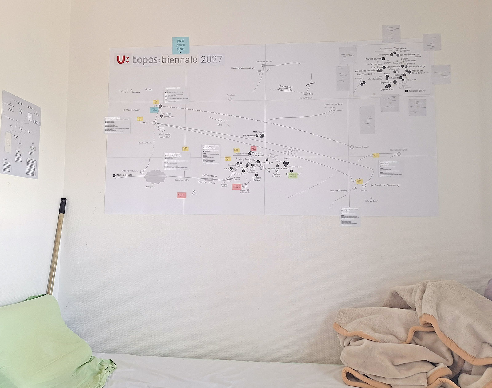
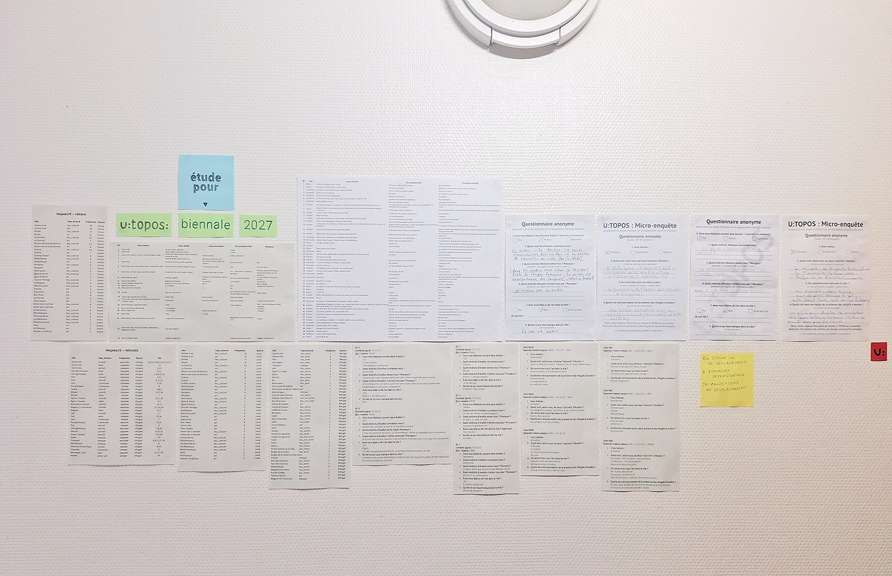
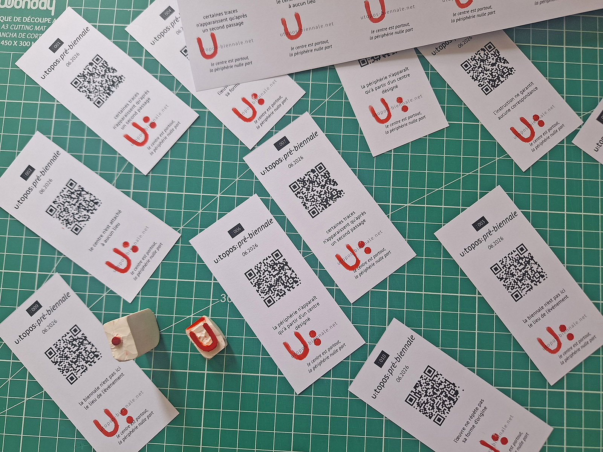

Pré-biennale

Pré-biennale

The pre-biennale was not a reduced version of the future biennale.
It was a temporary fixation of the project at the moment when its research, map, application, website and room-based presentation began to form a single structure.
The initial idea of a distributed exhibition in inhabited rooms returned in a condensed form: one lived-in room became the space where the current state of U:TOPOS could be presented.
En juin, la phase de pré-biennale de U:TOPOS a été présentée pendant deux semaines — à la fois comme un résultat intermédiaire de la préparation de la biennale et comme une fixation de son état actuel.
La préparation de U:TOPOS ne s’est pas développée de manière linéaire. Le projet a modifié sa propre configuration à plusieurs reprises, et certaines décisions n’ont pas émergé comme des éléments d’un plan préalablement conçu, mais au cours même du travail — parfois en réponse à une impasse, parfois comme un effet secondaire de l’étape précédente. En ce sens, la pré-biennale n’était pas un bloc préparatoire distinct, mais une manière de comprendre progressivement ce que la biennale pouvait devenir.
L’une des premières idées était une exposition distribuée dans l’espace d’une résidence sociale. Il était envisagé que 10 à 12 artistes migrants, venus de différents pays, vivent dans des chambres similaires à celle de l’organisateur : environ 13 m² avec cuisine et salle de bain. Pendant deux semaines, chacune de ces chambres se serait progressivement transformée en une petite exposition personnelle ou en une installation totale. Ensuite, les portes se seraient ouvertes, et les visiteurs seraient passés de chambre en chambre, traversant une série d’espaces artistiques extrêmement condensés, intimes et pourtant autonomes.
Au cours des discussions autour de ce modèle avec les employés de la résidence sociale et les représentants d’associations travaillant avec des réfugiés, il est devenu clair qu’il était impossible de le réaliser littéralement.
Parallèlement, la partie de recherche s’est développée. Des entretiens avec des habitants locaux et des réfugiés ont été recueillis, des tableaux d’observation ont été établis, des entretiens vidéo et des expériences urbaines ont été menés, et une carte alternative d’Avallon a été construite. Au départ, cette recherche n’avait pas de finalité clairement définie. Elle est devenue une manière d’entrer dans la ville et de commencer à se mettre en mouvement dans une situation où aucun point d’entrée évident n’existait.

Avec le temps, il est devenu clair que la carte n’était pas nécessaire comme documentation de la ville ni comme outil de navigation. Elle a commencé à fonctionner comme une structure interne de la biennale elle-même. Chaque nouvelle observation modifiait la carte ; chaque modification de la carte transformait à son tour le projet. C’est sur cette base qu’est apparu un prototype d’application mobile, comme l’une des interfaces de U:TOPOS. Plus tard, le site web est apparu, devenant un espace de publication et de mise à jour des matériaux. Ainsi, la recherche a progressivement produit sa propre infrastructure.
Assez rapidement, il est devenu évident que la partie de recherche nécessitait une forme de présentation distincte. Pour cela, il a été décidé de revenir à l’idée initiale de la chambre, mais sous une forme extrêmement condensée.
La présentation de la pré-biennale a eu lieu dans une seule chambre habitée de 13 m². Sur les murs étaient disposés des cartes, des schémas, des feuilles d’observation, des fragments d’entretiens et d’autres matériaux préparatoires. L’espace qui était initialement envisagé comme module de base de la biennale distribuée est devenu lui-même un espace d’exposition.
Il ne s’est pas agi ici d’une réalisation littérale du projet initial, mais pas non plus de son abandon. Il s’agissait plutôt d’un retour inattendu de l’idée initiale sous une forme condensée. Le projet, autrefois pensé comme un réseau de chambres habitées, s’est trouvé à ce stade concentré dans l’une d’elles.
Комната не стала заменой несостоявшейся структуры.
Она вернулась как её сжатие: не сеть комнат, не модель будущей биеннале, не демонстрация готового результата, а место, где стало видно текущее состояние проекта.
То, что не удалось распределить в пространстве, временно собралось в одной точке.
L’écart entre le projet et la vie quotidienne n’a pas disparu au moment de la présentation — à ce stade, il avait presque déjà cessé d’exister. Mais c’est ici qu’il est devenu impossible de ne pas le remarquer. La préparation de la biennale a cessé d’être quelque chose d’extérieur à la vie quotidienne et y est définitivement entrée comme l’une de ses composantes.
La pré-biennale s’est achevée moins par une présentation des résultats de la recherche que par la fixation de cet état.
